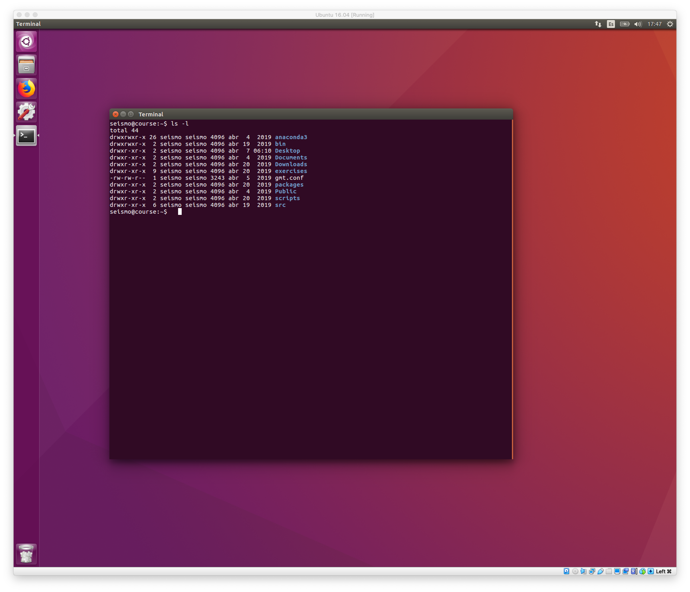

Tutorials
0. Setting up the Linux virtual machine
A Linux virtual machine has been created to run the examples of local earthquake tomography processing.
The file course.ova with the virtual machine (6.4 GB) can be downloaded from this
link.
To install and run the virtual machine the VirtualBox software in required.
This software is free and is available for Windows, macOS and Linux computers.
It can be downloaded in the VirtualBox home page.
Once VirtualBox has been installed, it is possible to create the virtual machine
using the file course.ova with the following steps:
- Open
VirtualBox - Go to the menu:
File > Import Appliance - Navigate to the directory where
course.ovahas been downloaded, select the file and click onOpenand thenContinue. The following window will appear:
- In this window you can change some settings, such as the name of the virtual machine,
number of CPUs, and RAM. For now you can leave the default values and make those
changes later. Click on
Importto generate the virtual machine. This can take a few minutes depending on your computer. - Once the virtual machine has been created, you can manage it in this window:
 If you have not changed the name, the virtual machine will appear as
If you have not changed the name, the virtual machine will appear as Ubuntu 16.04. If you click onSettingsyou can modify the number of CPUs, amount of RAM, etc of the virtual maching. In order to run PStomo, 1 CPU is enough. With respect to RAM, a value between 1 GB and half the RAM of the computer is appropriate. - Once you have modified the settings of the virtual machine, it can be started by clicking on
Start(button with the green arrow). If the virtual maching has booted correctly, click on the icon of theTerminalapplication and runls -l. The output on the screen shold be similar to this:  - Once started the virtual machine, it is useful to install the
Guest Additions. Go to the menuDevices > Insert Guest Additions CD Image.... This will mount a virtual CD that will automatically run the installation of theGuest Additions. It will prompt the admin password of the virtual machine which is seismo. once installed theGuest Additions, eject the CD and reboot the virtual machine. This installation has to be done only once.
1. Selecting a region for tomography
The first step for local earthquake tomography is to select the model region.
This is done by adjusting the following parameters in the parameter file,
that in our example is called lapalma_gradient_coarse.prm:
# Origin of the local coordinates
#
lat0=28.65 # latitude of the origin of coordinates
lon0=-17.85 # longitude of the origin of coordinates
#angle= # rotation angle for oblique projection (undefined for standard Transverse Mercator)
#
# Boundaries of the map where the model region (box) is included (only needed for box.sh)
#
lat1=28.2
lat2=29.1
lon1=-18.35
lon2=-17.35
#
# Box dimensions in km, referred to (lat0, lon0)
# - For true center x2=-x1 and y2=-y1
# - For lower left corner make x1=y1=0 and x2=xlen, y2=ylen
#
x1=-20
x2=20.0
y1=-27.0
y2=27.0
baseElev=-3.0 # top of model (negative above sea level)
zmax=45.0 # bottom of model
In order to select the model volume for tomography we also need to plot the earthquakes and stations in our dataset. The station and bulletin (earthquakes and arrival times) files are specified in these parameters:
#
# Station and event files
#
stations=$topdir/stations/canarias_2022.sta
bulletin=$topdir/bulletin/IGN_2013_present.nor
format=nordic
Once we have set the above parameters, we run the script box6.sh that plots
the stations, earthquakes, and rectangular box using GMT:
$ box6.sh lapalma_gradient_coarse.prm
This generates a PostScript file called box.ps that can be visualized
using for example gv:
$ gv box.ps &
The parameters that define the center of the model and the size of the box in x and y can be adjusted by trial and error until a suitable box is found such as the following:
2. Selecting earthquakes and arrival times for tomography
Once a suitable model volume (box) has been obtained, we can select well recorded earthquakes for the tomography. This is done by setting the following block of parameters in the parameter file:
#
# Selection parameters for tomography
#
mag_min=-2.0
mag_max=9.9
rms_min=0.0
rms_max=2.0
p_phases_min=8
p_phases_max=9999
p_weight_best=0
p_weight_worst=3
s_phases_min=4
s_phases_max=9999
s_weight_best=0
s_weight_worst=3
distance_min=0.0
distance_max=350.0
gap_min=0
gap_max=200
close_station=1
use_s_waves=1
use_polarities=1
These parameters are described in more detailed in this link
Once we have set the above parameters, we run the script let_selection.sh that
runs the selection program seleq and writes the selected earthquakes in
the format required by the tomography code pstomo_eq:
$ let_selection.sh lapalma_gradient_coarse.prm
This generates a PostScript file called dataset.ps that can be visualized
using for example gv:
$ gv dataset.ps &
In addition to the PostScript file, the script let_selection.sh also generates
3 input files required by the tomography code:
lapalma_src.in: file with earthquake (and explosion) hypocenterslapalma_stat.in: file with station coordinateslapalma_tt.in: file with P (and S) arrival times
The format of these files is described in more detail in this link.
3. Running the tomography code
To run the tomography code first we need to provide an initial 1D model. This is indicated in the following parameter:
# Initial velocity model
#
initial_model=$topdir/1Dmodels/lapalma_gradient01.prm # full path so it also works in offset-and-average runs
The format of the 1D model file is:
-6.0 4.7 # first column is depth in km, second column is P-wave velocity
0.0 5.5
10.0 6.3
18.0 8.0
100.0 8.2
Then the following parameters indicate the version of the tomography code to run (always pstomo_eq)
and the number of iterations. If more than one run is specified in the parameter file (e.g. multiple
values of smoothing) these can be run sequentially or in parallel (if the resources of the computer
allow it).
#
# Parameters for tomography codes
#
tomo_code=pstomo_eq
number_of_iterations=10 # number of iterations
parallel=0 # run different smoothers sequentially or in parallel
The following parameters control the size of the travel time and model grid:
#
# model parameters
#
h=0.3 # travel time grid spacing in km
magx=10 # number of travel time cells for each model cell in X direction
magy=10 # number of travel time cells for each model cell in Y direction
magz=5 # number of travel time cells for each model cell in Z direction
x_div=3 # number of divisions for offset and average in X direction
y_div=3 # number of divisions for offset and average in Y direction
z_div=3 # number of divisions for offset and average in Z direction
The following parameters control the travel time computations:
#
# travel time parameters
#
maxres=0.75 # maximum allowed P residual (seconds)
maxsres=1.50 # maximum allowed S residual (seconds)
maxOffset=100.0 # maximum distance to calculate travel times (km)
Podvin_Lecomte=1
The following parameters control the P and S travel time inversion parameters:
#
# P inversion parameters
#
invert=1 # invert velocity model (1=true, 0=false)
interpolate=1 # interpolate model into travel time grid (1=true, 0=false)
#smoother="100.0 75.0 50.0 40.0 30.0 20.0 10.0" # list with different values of smoother to test
smoother="10.0" # list with different values of smoother to test
# S inversion parameters
#
swave_flg=1
ps_wght_type=0
ps_wght=2.00
vpsreg_flg=1
vps_reg=50.0
vps_ratio=1.77
Finally the following parameters control the inversion parameter for earthquake relocations:
#
# earthquake inversion parameters
#
eqloc=1 # invert for earthquake relocations (1=true, 0=false)
min_z=-0.5 # minimum depth (defined in seleq.in???)
max_dh=5.0 # maximum allowed change in epicenter per iteration (km)
max_dt=2.0 # maximum allowed change in origin time per iteration (seconds)
no_earthq=0
no_shots=1
There are other parameters that affect the LSQR method used to invert the tomography matrix, but the default values are usually appropriate. A more detailed description of all the parameters is provided in this link
Once we have set all these parameters, we run the tomography using the following command:
$ let_run_pstomo.sh lapalma_gradient_coarse.prm &
The output of each run is generated in a directory with the following naming schema:
run_parfilename_smoother_xcellsize_ycellsize, where:
parfilenameis the prefix of the parameter file (lapalma_gradient_coarsefor the parameter filelapalma_gradient_coarse.prm.smootheris the value of the smoothing constraint used in this run (e.g.010.0for a smoothing value of 10.0)xcellsizeis the size in km of the model cells in the X directory (03.00 for a cell size of 3.0 km)ycellsizeis the size in km of the model cells in the Y directory
An example of run directory then could be: run_lapalma_gradient_coarse_010.0_03.00_0.30
Inside this directory we can find the following files:
pm.i: P model (in binary format) for iterationi.pc.i: P coverage (in binary format) for iterationi.sm.i: S model (in binary format) for iterationi.sc.i: S coverage (in binary format) for iterationi.src.i: Earthquake relocations for iterationi.log: log file with output ofpstomo_eq
4. Displaying the results
The script let_plot_pstomo.sh can be used to plot the results of the tomography. The syntax of
the script is:
$ let_plot_pstomo.sh parameter_file run_directory [ plot_type [ model [ iteration ] ] ]
plot_typecan belayer(default),profile, orprofile_mapmodelcan bep(default) ors.iterationis the iteration to plot (default is the last iteration). This option can be useful to plot intermediate results before a long run finishes.
This generates PostScript files in the run directory with the specified plots. These PostScript
files can be visualized with gv.
Example 1. Local earthquake tomography
Example 2. Cross-hole tomography
Example 3. Traveltime tomography with statics
Example of a complete parameter file
# File: la_palma_gradient_coarse.prm
# Parameters to adjust the study region
# Prefix for filenames related to this dataset
#
topdir=${HOME}/Projects/LET/La_Palma
prefix=lapalma # prefix for selection and parameter files
label="La Palma" # title for plots
#
# Origin of the local coordinates (normally "center" of the model, or lower-left corner)
#
lat0=28.65 # latitude of the origin of coordinates
lon0=-17.85 # longitude of the origin of coordinates
#angle= # rotation angle for oblique projection (undefined for standard Transverse Mercator)
#
# Boundaries of the map where the model region (box) is included (only needed for box.sh)
#
lat1=28.2
lat2=29.1
lon1=-18.35
lon2=-17.35
#
# Box dimensions in km, referred to (lat0, lon0)
# - For true center x2=-x1 and y2=-y1
# - For lower left corner make x1=y1=0 and x2=xlen, y2=ylen
#
x1=-20
x2=20.0
y1=-27.0
y2=27.0
baseElev=-3.0 # top of model (negative above sea level)
zmax=45.0 # bottom of model
#
# Selection dimension (can be smaller than box)
#
xs_1=$x1
xs_2=$x2
ys_1=$y1
ys_2=$y2
zs_1=0.5
zs_2=40.0
#
# Map scale; used also to obtain geographical coordinates of the corners
#
#scale="1:5000000"
scale=16.0
#
# Station and event files
#
stations=$topdir/stations/canarias_2022.sta
bulletin=$topdir/bulletin/IGN_2013_present.nor
format=nordic
#
topo_grid=$topdir/gridfiles/lapalma_03s.nc
profiles=$topdir/profiles/W-E_profiles.list
#profiles=$topdir/profiles/S-N_profiles.list
#
# Selection parameters for tomography
#
mag_min=-2.0
mag_max=9.9
rms_min=0.0
rms_max=2.0
p_phases_min=8
p_phases_max=9999
p_weight_best=0
p_weight_worst=3
s_phases_min=4
s_phases_max=9999
s_weight_best=0
s_weight_worst=3
distance_min=0.0
distance_max=350.0
gap_min=0
gap_max=200
close_station=1
use_s_waves=1
use_polarities=1
#
# Initial velocity model
#
initial_model=$topdir/1Dmodels/lapalma_gradient01.prm # full path so it also works in offset-and-average runs
#
# Parameters for tomography codes
#
tomo_code=pstomo_eq
number_of_iterations=10 # number of iterations
parallel=0 # run different smoothers sequentially or in parallel
#
# model parameters
#
h=0.3 # travel time grid spacing in km
magx=10 # number of travel time cells for each model cell in X direction
magy=10 # number of travel time cells for each model cell in Y direction
magz=5 # number of travel time cells for each model cell in Z direction
x_div=3 # number of divisions for offset and average in X direction
y_div=3 # number of divisions for offset and average in Y direction
z_div=3 # number of divisions for offset and average in Z direction
#
# travel time parameters
#
maxres=0.75 # maximum allowed P residual (seconds)
maxsres=1.50 # maximum allowed S residual (seconds)
maxOffset=100.0 # maximum distance to calculate travel times (km)
Podvin_Lecomte=1
#
# P inversion parameters
#
invert=1 # invert velocity model (1=true, 0=false)
interpolate=1 # interpolate model into travel time grid (1=true, 0=false)
#smoother="100.0 75.0 50.0 40.0 30.0 20.0 10.0" # list with different values of smoother to test
smoother="10.0" # list with different values of smoother to test
# S inversion parameters
#
swave_flg=1
ps_wght_type=0
ps_wght=2.00
vpsreg_flg=1
vps_reg=50.0
vps_ratio=1.77
#
# earthquake inversion parameters
#
eqloc=1 # invert for earthquake relocations (1=true, 0=false)
min_z=-0.5 # minimum depth (defined in seleq.in???)
max_dh=5.0 # maximum allowed change in epicenter per iteration (km)
max_dt=2.0 # maximum allowed change in origin time per iteration (seconds)
no_earthq=0
no_shots=1
#
# output
#
verbose=1
ttlog=0 # output synthetic travel times (1=true, 0=false)
eqinfo=0 # output log file with all travel time residuals (0=true, 1=false)
timefile=0 # output travel time binary files for all stations (0=true, 1=false)
#
# LSQR
#
ilsqr=500 # number of LSQR iterations
truncater=0.001 # SVD truncater for earthquake location
max_cond_num=500.0
reortho_flg=0
UVout_flg=0
#
# refine model with depth
#
detail=0
det_z=1.0
det_magz=2
reduce=0
red_z=3.0
red_magx=2
red_magy=2
red_magz=2
#
# others
#
msd=0.0 #
relative=0
cross_grad=1
cross_grad_wght=200.0
use_pert_file=0
#
# not used
#
errlog=0 # output log file with unused travel times (0=true, 1=false)
reslog=1 # output log file with all travel time residuals (0=true, 1=false)
twght=0 # weight travel times by pick quality (0=true, 1=false)
xwt=1.0 # weight factor of smoothing in X direction
ywt=1.0 # weight factor of smoothing in X direction
zwt=1.0 # weight factor of smoothing in X direction
#
# Parameters for checkerboard tests
#
synthetic_anomaly=10.0 # magnitude of synthetic spike anomaly (in %)
x_spike=4 # size of spike in X direction (in cells)
y_spike=4 # size of spike in Y direction (in cells)
z_spike=4 # size of spike in Z direction (in cells)
x_buffer=4 # number of cells with 0 anomaly between spikes in X direction
y_buffer=4 # number of cells with 0 anomaly between spikes in Y direction
z_buffer=4 # number of cells with 0 anomaly between spikes in Z direction
x_offset=0 # extra offset of skipes in X direction (in cells)
y_offset=0 # extra offset of skipes in Y direction (in cells)
z_offset=4 # extra offset of skipes in Z direction (in cells)
#
# GMT5 plotting parameters
#
start_layer=3
end_layer=20
paper_size=a4
cptdir=${HOME}/data/cpt
p_cpt=$cptdir/16%_panoply.cpt
s_cpt=$cptdir/16%_panoply.cpt
vpvs_cpt=$cptdir/vpvs_drywet.cpt
pc_cpt=$cptdir/hitc_20.cpt
sc_cpt=$cptdir/hitc_20.cpt
orientation="-P"
features="-Df -A10/1/1 -W0.5p -N2/0.5p,gray,- -L-17.72/28.48/$lat0/10"
include_plot=$topdir/geology/faults.sh
xa=0.2
xt=0.1
xg=0
ya=0.2
yt=0.1
yg=0
axis=WeSn
sta_symbol="-St0.15c -L -W0.25p,0/0/255"
sta_bad_symbol="-Si0.15c -L -G0"
eq_symbol="-Sc0.07c -L -W0.25p,255/0/0"
eq_bad_symbol="-Sc0.07c -L -W0.25p,255/100/255"
ex_symbol="-Sx0.07c -L -W0.25p,255/0/255"
gmt_verbose=
#
# vertical cross sections
#
dp=0.2
pwidth=10.0
offset=5.0
ha=10
ht=5
va=10
vt=5
p_cpt_absolute=$cptdir/vp_crimson3.cpt
s_cpt_absolute=$cptdir/vs.cpt
topo_cpt=$cptdir/dp5.cpt
eq_symbol1="-Sc0.1c -L -W0.25p,255 -G0"
sta_symbol1="-Si0.2c -L -W0.25p -G255/0/255"